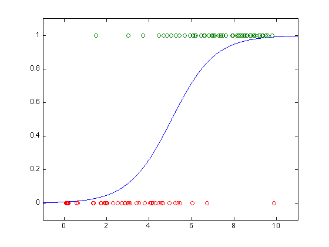

% Section 7.1.1 % Boyd & Vandenberghe, "Convex Optimization" % Kim & Mutapcic, "Logistic regression via geometric programming" % Written for CVX by Almir Mutapcic 02/08/06 % % Solves the logistic regression problem re-formulated as a GP. % The original log regression problem is: % % minimize sum_i(theta'*x_i) + sum_i( log(1 + exp(-theta'*x_i)) ) % % where x are explanatory variables and theta are model parameters. % The equivalent GP is obtained by the following change of variables: % z_i = exp(theta_i). The log regression problem is then a GP: % % minimize prod( prod(z_j^x_j) ) * (prod( 1 + prod(z_j^(-x_j)) )) % % with variables z and data x (explanatory variables). randn('state',0); rand('state',0); a = 1; b = -5; m = 100; u = 10*rand(m,1); y = (rand(m,1) < exp(a*u+b)./(1+exp(a*u+b))); % order the observation data ind_false = find( y == 0 ); ind_true = find( y == 1 ); % X is the sorted design matrix % first have true than false observations followed by the bias term X = [u(ind_true); u(ind_false)]; X = [X ones(size(u,1),1)]; [m,n] = size(X); q = length(ind_true); cvx_begin gp % optimization variables variables z(n) t(q) s(m) minimize( prod(t)*prod(s) ) subject to for k = 1:q prod( z.^(X(k,:)') ) <= t(k); end for k = 1:m 1 + prod( z.^(-X(k,:)') ) <= s(k); end cvx_end % retrieve the optimal values and plot the result theta = log(z); aml = -theta(1); bml = -theta(2); us = linspace(-1,11,1000)'; ps = exp(aml*us + bml)./(1+exp(aml*us+bml)); plot(us,ps,'-', u(ind_true),y(ind_true),'o', ... u(ind_false),y(ind_false),'o'); axis([-1, 11,-0.1,1.1]);
Calling Mosek 9.1.9: 1320 variables, 401 equality constraints
------------------------------------------------------------
MOSEK Version 9.1.9 (Build date: 2019-11-21 11:32:15)
Copyright (c) MOSEK ApS, Denmark. WWW: mosek.com
Platform: MACOSX/64-X86
Problem
Name :
Objective sense : min
Type : CONIC (conic optimization problem)
Constraints : 401
Cones : 200
Scalar variables : 1320
Matrix variables : 0
Integer variables : 0
Optimizer started.
Presolve started.
Linear dependency checker started.
Linear dependency checker terminated.
Eliminator started.
Freed constraints in eliminator : 0
Eliminator terminated.
Eliminator started.
Freed constraints in eliminator : 0
Eliminator terminated.
Eliminator - tries : 2 time : 0.00
Lin. dep. - tries : 1 time : 0.00
Lin. dep. - number : 0
Presolve terminated. Time: 0.00
Problem
Name :
Objective sense : min
Type : CONIC (conic optimization problem)
Constraints : 401
Cones : 200
Scalar variables : 1320
Matrix variables : 0
Integer variables : 0
Optimizer - threads : 8
Optimizer - solved problem : the primal
Optimizer - Constraints : 200
Optimizer - Cones : 201
Optimizer - Scalar variables : 603 conic : 603
Optimizer - Semi-definite variables: 0 scalarized : 0
Factor - setup time : 0.00 dense det. time : 0.00
Factor - ML order time : 0.00 GP order time : 0.00
Factor - nonzeros before factor : 5250 after factor : 5250
Factor - dense dim. : 0 flops : 3.71e+05
ITE PFEAS DFEAS GFEAS PRSTATUS POBJ DOBJ MU TIME
0 1.6e+00 5.3e+01 2.4e+02 0.00e+00 8.278383991e+01 -1.610204003e+02 1.0e+00 0.00
1 8.4e-01 2.8e+01 9.8e+01 6.46e-01 6.352338960e+01 -7.701832110e+01 5.3e-01 0.01
2 8.5e-02 2.9e+00 3.5e+00 7.67e-01 4.063282386e+01 2.473052030e+01 5.4e-02 0.01
3 5.4e-03 1.8e-01 6.2e-02 9.32e-01 3.334737442e+01 3.230090751e+01 3.4e-03 0.01
4 3.6e-04 1.2e-02 1.1e-03 9.89e-01 3.300303043e+01 3.293276591e+01 2.3e-04 0.01
5 2.0e-05 6.7e-04 1.4e-05 9.97e-01 3.298114923e+01 3.297724371e+01 1.3e-05 0.01
6 1.8e-06 6.0e-05 3.8e-07 9.99e-01 3.297983717e+01 3.297948471e+01 1.1e-06 0.01
7 2.0e-07 6.6e-06 1.4e-08 1.00e+00 3.297971771e+01 3.297967890e+01 1.3e-07 0.02
8 2.2e-08 7.0e-07 4.8e-10 1.00e+00 3.297970426e+01 3.297970018e+01 1.3e-08 0.02
9 2.2e-09 7.1e-08 1.6e-11 1.00e+00 3.297970283e+01 3.297970242e+01 1.3e-09 0.02
Optimizer terminated. Time: 0.02
Interior-point solution summary
Problem status : PRIMAL_AND_DUAL_FEASIBLE
Solution status : OPTIMAL
Primal. obj: 3.2979702832e+01 nrm: 1e+02 Viol. con: 3e-09 var: 0e+00 cones: 0e+00
Dual. obj: 3.2979702417e+01 nrm: 1e+00 Viol. con: 0e+00 var: 7e-08 cones: 0e+00
Optimizer summary
Optimizer - time: 0.02
Interior-point - iterations : 9 time: 0.02
Basis identification - time: 0.00
Primal - iterations : 0 time: 0.00
Dual - iterations : 0 time: 0.00
Clean primal - iterations : 0 time: 0.00
Clean dual - iterations : 0 time: 0.00
Simplex - time: 0.00
Primal simplex - iterations : 0 time: 0.00
Dual simplex - iterations : 0 time: 0.00
Mixed integer - relaxations: 0 time: 0.00
------------------------------------------------------------
Status: Solved
Optimal value (cvx_optval): +2.10331e+14
